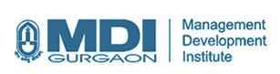

<div class = "resume-wrap">
  <div class = "resume" id = "resume">
      <div class = "bio">
        <h1 class = "section-header">About</h1>
        <div class = "bio-left">
          <!-- <p><span class = "bio-key">Who am I?</span> I am a Mumbai based Digital Product Manager who is Detail Oriented, Tech Savvy, & Analytically Focused. I manage tech teams and facilitate effective communication that ensures maximum visibility of the project to all stakeholders using Lean-Agile frameworks, such as Kanban and Scrum. Have the ability to figure out solutions in the midst of chaos. </p>
          <p><span class = "bio-key">What drives me?</span>  I’m fascinated by what software makes possible, and what you can be capable of if you push yourself and stretch your resources. My aim is to view the product and its features from the eyes of the user and to create an optimized experience that eases pain points and brings joy.</p>
          <p><span class = "bio-key">What else do I love?</span> In free time, I love playing Snooker. Avid reading, exploring the history & culture of various places is my preferred way of learning and making sense of the world.</p> -->

          <div class="infotab">
            <button class="tablinks bio-key active" onclick="openCity(event, 'q1')" id="defaultOpen">Who am I?</button>
            <button class="tablinks bio-key" onclick="openCity(event, 'q2')">What drives me?</button>
            <button class="tablinks bio-key" onclick="openCity(event, 'q3')">What else do I love?</button>
          </div>

          <div id="q1" class="infotabcontent">
            <!-- <h3>Who am I?</h3> -->
            <!-- <p class="pd10">I am a Digital Product Manager who is  -->
            <p class="pd10">I am a Product enthusiast who is <span class="key-term">Tech Savvy</span>, <span class="key-term">Detail Oriented</span>, & <span class="key-term">Analytically Focused</span>. I manage tech teams and facilitate effective communication that ensures maximum visibility of the project to all stakeholders using Lean-Agile frameworks, such as Kanban and Scrum. Have the ability to figure out solutions in the midst of chaos.<br> <href id="seeMore">See More...</href></p>
          </div>

          <div id="q2" class="infotabcontent" style="display:none">
            <!-- <h3>What drives me?</h3> -->
            <p class="pd10">I’m fascinated by what software makes possible, and what you can be capable of if you push yourself and stretch your resources. <br><br>I love data, design, psychology, economics, and efficiency. I love how they all blend together in the process of creating great software products.</p> 
          </div>

          <div id="q3" class="infotabcontent" style="display:none">
            <!-- <h3>What else do I love?</h3> -->
            <p class="pd10">In free time, I love playing Snooker.<br><br>Avid reading, exploring the history & culture of various places is my preferred way of learning and making sense of the world.</p>
          </div>
        </div>
        <div class = "bio-right">
          <div class = "availability">
            <p><span class = "bio-key">Availability</span><br /><br />
            I am looking for full-time Product Management/ Project Management/ Tech. Sales roles in companies that strive to bring about lasting social and technological changes. If you have an idea for a collaboration, hit me up and we could discuss over a coffee!</p>
          </div>
          <a class = "resume-button primary-button" href ="{{ site.url }}/ArushResume.pdf" target = "_blank"><i class="fa fa-file-pdf-o button-fa"></i> Print-friendly Resume</a>
          <a class = "resume-button secondary-button" href ="#contact">Let's Talk!</a>
        </div>
      </div> <br/><br/>

      <!--
        <p class = "bio-key">Skills and process</p>
        <div id = "skill-research" class = "skill">
          <div class = "skill-img">
            
          </div>
          <div class = "skill-text">
            <h2>Research</h2>
            <p>I use interviews, contextual inquiry, shadowing, brain/bodystorming,
              heuristic evaluation to inform my design and problem strategy. I also script and moderate usability tests and am a sharp note-taker during.
            </p>
          </div>
        </div>
        <div id = "skill-design" class = "skill">
          <div class = "skill-img">
            
          </div>
          <div class = "skill-text">
            <h2>Design + Prototyping</h2>
            <p>From paper sketches, I iteratively converge towards more refined solutions and use Sketch, Illustrator, Balsamiq or Figma for wireframes and creating UX specifications. To create prototypes, I use Proto/Invision, Marvel and Framer.
            </p>
          </div>
        </div>
        <div id = "skill-testing" class = "skill">
          <div class = "skill-img">
            
          </div>
          <div class = "skill-text">
            <h2>Visual + Development</h2>
            <p>I use Sketch and Zeplin to create Visual Design specifications. For development, I primarily work in HTML/Jade, CSS/SASS/SCSS, Javascript (jQuery, React, d3) and Python. I also have experience working with Unity, Arduino and Processing.
            </p>
          </div>
        </div>
      </div> -->
      <div class = "timeline">
        <p class = "bio-key">Experience</p>
        <section id="cd-timeline" class = "cd-container">
          <div class="cd-timeline-block"">
            <div class="cd-timeline-img cd-work">
              <i class="fa fa-briefcase fa-2x"></i>
            </div>
            <div class="cd-timeline-content"  data-aos="anim-right" data-aos-duration="2000">
              <a href = "https://www.wipro.com/" target="_blank"></a>
              <h2>WIPRO</h2>
              <h3 class = "role">Pre Sales Consultant (Summer Internship)</h3>
              <p>Researched next-gen tech. - 𝗣𝗿𝗼𝗰𝗲𝘀𝘀 𝗠𝗶𝗻𝗶𝗻𝗴, designed an evaluation framework for benchmarking 5 largest global vendors. Also, prepared an 𝗥𝗙𝗣 for hyper-automation of an O2C process for a European manufacturing giant</p>
              <span class="cd-date"  data-aos="anim-date" data-aos-duration="1000">April 2019 - May 2019</span>
              <!-- <span class="cd-date">May 2016 - <span class = "present">present</span></span> -->
            </div>
          </div>
          <div class="cd-timeline-block">
            <div class="cd-timeline-img cd-acad">
              <i class="fa fa-graduation-cap fa-2x"></i>
            </div>
            <div class="cd-timeline-content" data-aos="anim-left" data-aos-duration="2000">
              <a href = "https://www.mdi.ac.in/" target="_blank"></a>
              <h2> MDI Gurgaon (Masters)</h2>
              <h3 class = "role">Focus: MBA, International Business</h3>
              <p class = "gpa">GPA: 7.10/10</p>
              <p>This program helped me dive in intense period of personal & professional transformation with a diverse community of colleagues that prepared me for challenges in any functional area.</p>
              <span class="cd-date" data-aos="anim-date" data-aos-duration="1000">July 2018 - April 2020</span>
            </div>
          </div>
          <div class="cd-timeline-block">
            <div class="cd-timeline-img cd-work">
              <i class="fa fa-briefcase fa-2x"></i>
            </div>
            <div class="cd-timeline-content" data-aos="anim-right" data-aos-duration="2000">
              <div class="jwLogo">  </div>
              <!-- <a href = "https://jungleworks.com/" target="_blank"></a> -->
              <h2>JungleWorks</h2>
              <h3 class = "role">Project Manager - Software Development</h3>
              <p>Led a cross-functional team of developers while practicing agile practices. Executed full-stack product development projects. Worked heavily on product design, user story/personas, and growth strategies.</p>
              <p>
              𝗕𝘂𝗶𝗹𝘁 𝗿𝗼𝗯𝘂𝘀𝘁 𝗘𝗥𝗣 𝗽𝗹𝗮𝘁𝗳𝗼𝗿𝗺 𝗳𝗼𝗿 𝗧𝗲𝗹𝗲𝗰𝗼𝗺 𝗖𝗼𝘀. 𝗰𝗹𝗼𝗰𝗸𝗶𝗻𝗴 $𝟭𝗠+ 𝗿𝗲𝘃𝗲𝗻𝘂𝗲 𝘄𝗶𝘁𝗵𝗶𝗻 𝟯 𝗺𝗼𝗻𝘁𝗵𝘀.
              </p>
              <span class="cd-date" data-aos="anim-date" data-aos-duration="1000">August 2015 - May 2017</span>
              <!-- <span class="cd-date">May 2016 - <span class = "present">present</span></span> -->
            </div>
          </div>
          <div class="cd-timeline-block">
            <div class="cd-timeline-img cd-work">
              <i class="fa fa-briefcase fa-2x"></i>
            </div>
            <div class="cd-timeline-content" data-aos="anim-left" data-aos-duration="2000">
              <!--  -->
              <div class="bnyLogo" style="height:50x">  </div>
              <h2>Bank of New York Mellon</h2>
              <h3 class = "role">Applications Developer</h3>
              <p>After graduating, I started working full-time as a software developer building applications for
              US Government's asset management department. Hands-on approach to designing architecture, writing technical specifications, code + automated tests, and QA.</p> <p>𝗥𝗲𝗰𝗲𝗶𝘃𝗲𝗱 ‘𝗪𝗢𝗪 𝗮𝘄𝗮𝗿𝗱’ 𝗮𝗻𝗱 𝗵𝗶𝗴𝗵𝗲𝘀𝘁 𝗶𝗻𝗰𝗿𝗲𝗺𝗲𝗻𝘁 𝗼𝗳 ~𝟰𝟬% 𝗮𝗺𝗼𝗻𝗴𝘀𝘁 𝟯𝟱𝟬+ 𝘁𝗿𝗮𝗶𝗻𝗲𝗲𝘀</p>
              <span class="cd-date" data-aos="anim-date" data-aos-duration="1000">June 2015 to April 2017</span>
            </div>
          </div>
          <div class="cd-timeline-block">
            <div class="cd-timeline-img cd-acad">
              <i class="fa fa-graduation-cap fa-2x"></i>
            </div>
            <div class="cd-timeline-content" data-aos="anim-right" data-aos-duration="2000">
              <a href = "https://www.chitkara.edu.in/engineering/electronics-communication-engineering" target="_blank"></a>
              <h2>Chitkara University (Bachelors of Engineering)</h2>
              <h3 class = "role">Focus: Electronics & Communication</h3>
              <p class = "gpa">GPA: 7.13/10</p>
              <p>Graduated in May 2015. Here I was engrossed in circuits while building higher level of analytical and engineering design skills.</p>
              <span class="cd-date" data-aos="anim-date" data-aos-duration="1000">July 2011 to May 2015</span>
            </div>
          </div>
        </section>
      </div>

  </div>
</div>